KompoZer 操作基础教程
作者：Teliute 来源：基础教程网
基础3 - 新建网页 返回目录 下一课这一课，我们来学习怎样在KompoZer中新建一个网页，我们将创建一个简单的个人主页，下面我们来看一个练习；
1、启动KompoZer
1）点左上角菜单“ 应用程序－编程－KompoZer”，就可以启动KompoZer程序；
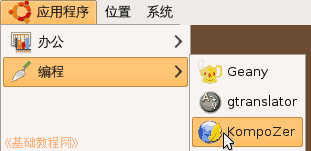
2）第一次启动时会出来一个小面板，点关闭即可，然后进入程序窗口中；
2、新建网页
1）点菜单“格式－页面标题和属性..”(在格式菜单的最下面)，出来一个对话框面板；
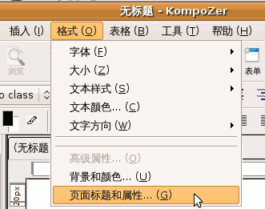
2）在面板中，输入标题“青青草”，作者写自己，下面语言是 zh-cn，方向是“从左到右”，编码是UTF-8，
检查一下然后点“确定”按钮，然后标签上就出来一个标题，红色图标是还没有保存；
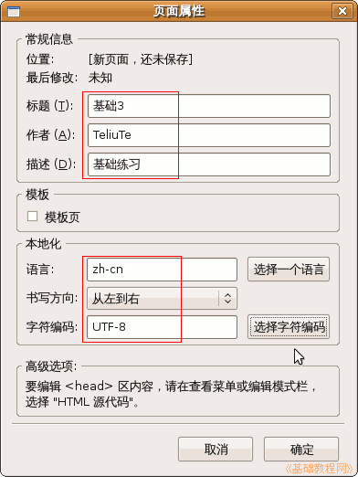 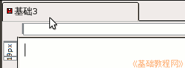
3）点菜单“文件－保存”命令，出来一个另存为的对话框，
在上面找到自己的文件夹，在文件名那儿改成英文的 jichu3.html 然后点保存按钮；
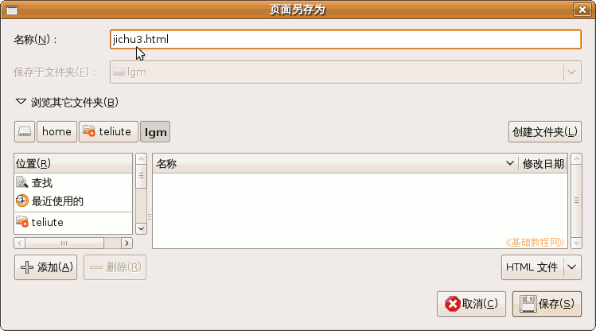
3、输入内容
1）在中间的工作区里点一下鼠标左键，左上角一个光标一闪一闪，可以输入文字了，
输入下面三行内容，输完一行后按一下回车键，输完后按Ctrl＋S组合键保存一下；
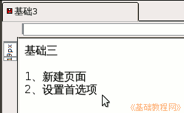
2）保存好以后，点上面工具栏里的“浏览”按钮，是一个放大镜图标，
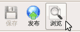
看一下自己做的网页，稍稍还有些简单，后面我们会逐步学习修饰网页；
4、设置首选项
1）点菜单“工具-首选项”，进入首选项面板，在左边栏选择字体，在右边选择简体中文；
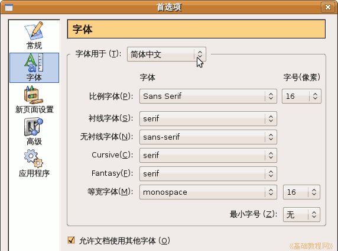
2）在“新页面设置 - 本地化”中，设置语言为 zh-cn、书写方向从左到右、编码 UTF-8，上面的作者写自己；
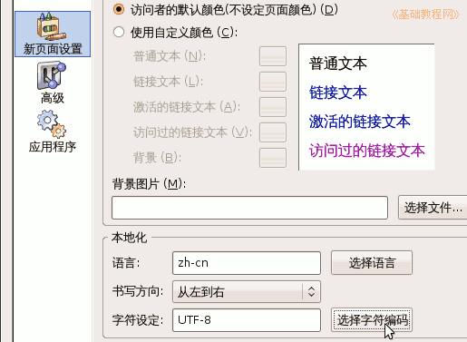
3）在“高级 - 标记”中，语言选择 XHTML，DTD 选择 Transitional，适当提高兼容性；
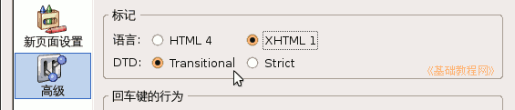
4）在“应用程序”里，可以设置网页浏览器和外部文本编辑器；
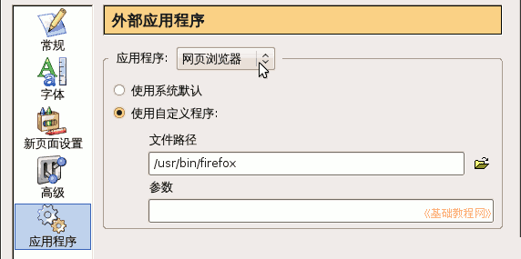
设置好以后，点“确定”保存设置；
本节学习了在KompoZer中创建网页和设置首选项的基本方法，如果你成功地完成了练习，请继续学习下一课内容；
本教程由86团学校TeliuTe制作|著作权所有
基础教程网：http://teliute.org/
美丽的校园……
转载和引用本站内容，请保留版权信息和本站链接。